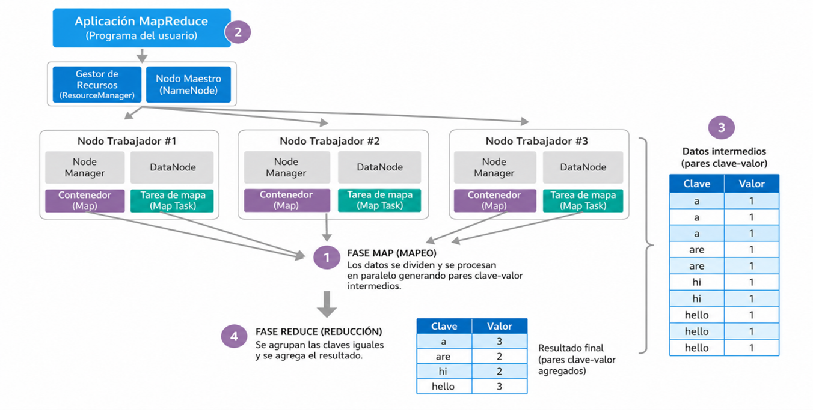

Capítulo 3. Ecosistema de Hadoop
Estructura de Hadoop
Estructura de Hadoop
MapReduce es el modelo de programación distribuida utilizado por Apache Hadoop para el procesamiento por lotes (Batch Processing) de grandes volúmenes de datos. Permite dividir un problema en múltiples tareas que se ejecutan en paralelo sobre los diferentes nodos de un clúster Hadoop.
Un trabajo (Job) MapReduce representa una tarea que un usuario desea ejecutar sobre un conjunto de datos. Está compuesto por:
Información almacenada en HDFS que será procesada.
Implementa las funciones Map y Reduce.
Parámetros necesarios para la ejecución del trabajo.

Figura 15. Fases del modelo de programación MapReduce.
| Fase | Función |
|---|---|
| Map | Transforma los datos en pares <clave, valor>. |
| Shuffle & Sort | Agrupa y ordena las claves iguales. |
| Reduce | Agrega los valores y genera la salida final. |
Uno de los ejemplos más conocidos de MapReduce es el programa WordCount, cuyo objetivo consiste en contar el número de veces que aparece cada palabra dentro de uno o varios documentos de texto.

Figura 16. Ejemplo del algoritmo WordCount utilizando MapReduce.
MapReduce constituye el modelo clásico de procesamiento distribuido de Hadoop. Su división en las fases Map, Shuffle & Sort y Reduce permite ejecutar tareas de forma paralela sobre grandes volúmenes de información, reduciendo significativamente el tiempo de procesamiento y aprovechando la arquitectura distribuida de HDFS y YARN.